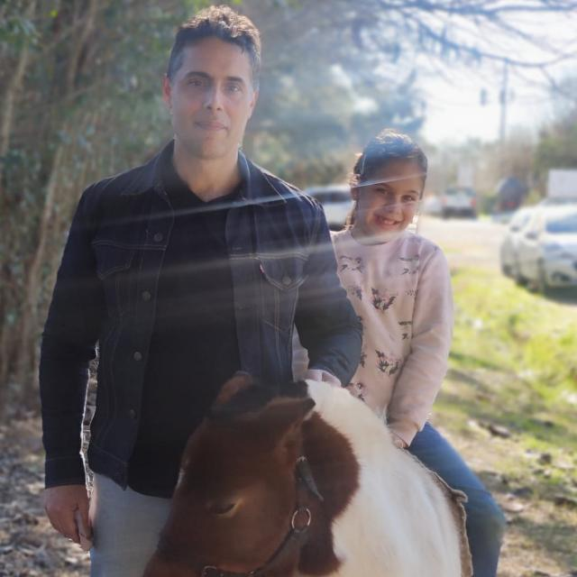

Incio
Diario Clarin
Contactarse
Página de Guillermo Y Francesca

Nos gusta mucho salir de paseo y disfrutar de la naturaleza. Como también ver TikToks en casa..
Lugares que visitamos y más nos gustaron :
Parque Chacabuco
Parque Centenario
Tomas Jofre
Vial Costero Vicente Lopez
Parque Avellaneda
Pinamar
Colon Entre Rios
La música que nos gusta escuchar cuando salimos: